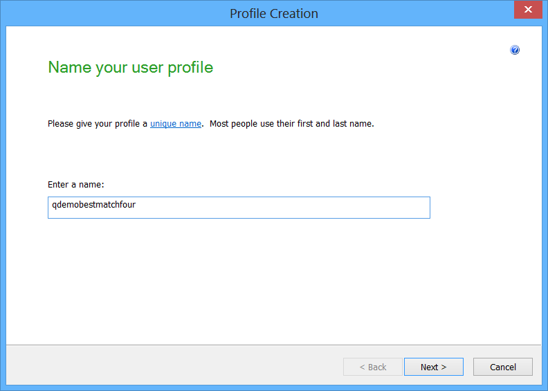
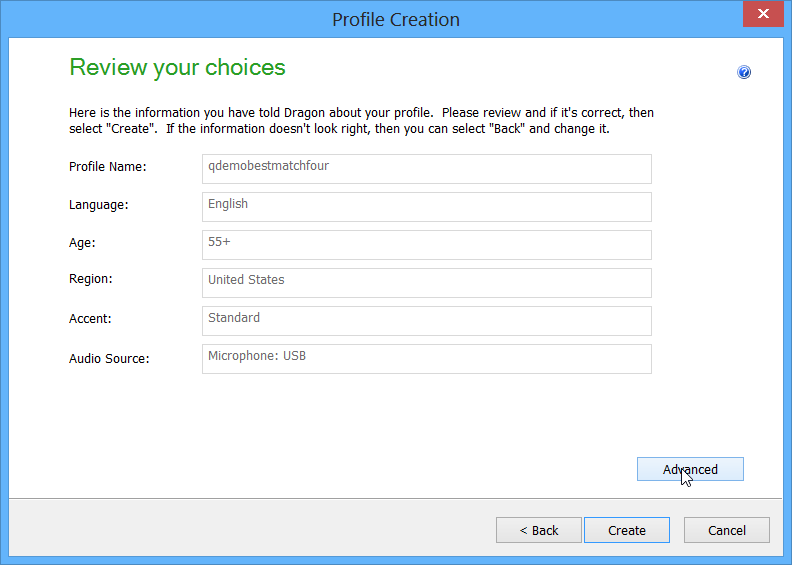
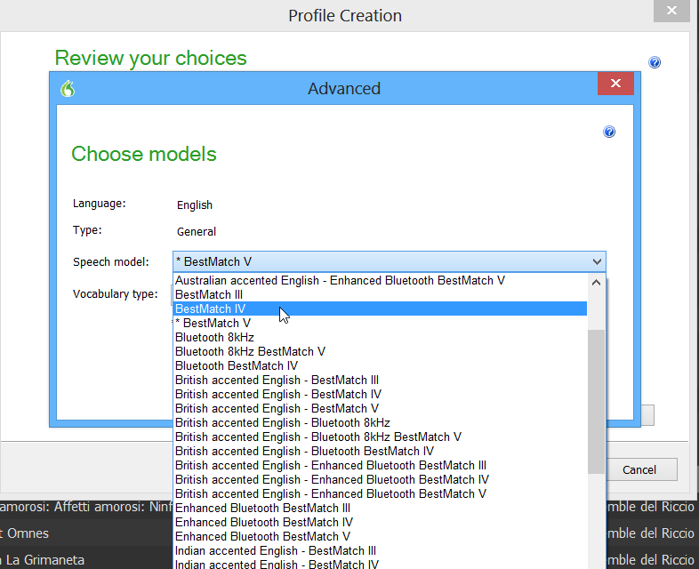

Problems with Speech Model BestMatch V
NatLink functions poorly with Speech Model BestMatch V
Dragon NaturallySpeaking versions 12 and onwards offer a new speech model, BestMatch V, by default on many machines that is supposed to improve accuracy somewhat, although independent tests seem to indicate that the improvement mostly fades over time.
Unfortunately, this new speech model handles even mildly-complicated command grammars very poorly: when using such grammars, it can take multiple seconds for your utterances to be typed or take effect, which is extremely frustrating. Accordingly, we recommend that if you use NatLink you stick with BestMatch IV, which has essentially the same accuracy and does not suffer from slow recognition.
When starting up NatLink (together with Dragon 12) the speech model of the User Profile that is open is checked. A warning is given in the Messages from NatLink window, which is the renamed Messages from NatLink window (from 4.1hotel onwards), whenever a User Profile using the BestMatch V is opened. This check is also performed when you change your User Profile.
How to use BestMatch IV (or even BestMatch III) instead of BestMatch V?

You should create a new User Profile.
With the Dragon option Profile, New User Profile, New or with Profile, Manage User Profiles, New you find this dialog window.

After several screens in the setup wizard you come to this dialog. Choose the Advanced button!

Choose in this dialog for the BestMatch IV option that is closest to the BestMatch V option that was specified already. Note that BestMatch III is probably even faster if your work relies more on commands than on dicate.
|